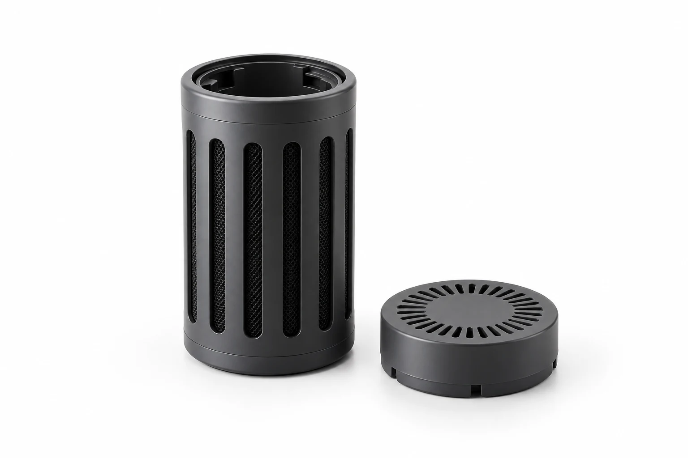

APPLICATION / 01
생활가전용 흡착·탈취 소재

자세히 보기 ↗공기청정기·음식물처리기·냉장고의 사용환경에 맞춰 활성탄과 기능성 흡착소재를 적용합니다. 소재 선정부터 필터 구조와 완제품 개발까지 연결합니다.
| 적용 소재 | 제거 대상 | 제품 모델·규격 |
|---|---|---|
| 일반활성탄 | 톨루엔 등 VOCs · 초산 | WFT-AC325 — 야자계 분말 활성탄, 입도 325mesh |
| 첨착활성탄 (CA 규격) | 암모니아 · 아세트알데히드 · 초산 · 포름알데히드 · 톨루엔 | WFT-AC200SD8 — 야자계 펠렛 활성탄, 직경 2mm WFT-AC300SD8 — 야자계 펠렛 활성탄, 직경 3mm WFT-AC300SG8 — 석탄계 펠렛 활성탄, 직경 3mm |
| 알칼리 첨착활성탄 | 황화수소 등 산성가스 · 메틸머캅탄 등 자극취 성분 | WFT-AC200YHA — 야자계 펠렛 활성탄, 직경 2mm |
| 분말 제올라이트 | 암모니아 · 저농도 VOCs | WFT-ZeolX WFT-ZeolB |
| 냉장고용 탈취 소재 | 황화수소 · 암모니아 | WFT-AC360R — 야자계 입상 활성탄, 30x60mesh |
| 음식물 처리기용 탈취 소재 | 암모니아 · 트리메틸아민 · 황화수소 · 메틸머캅탄 · 아세트산 | WFT-AC400589 — 석탄계 펠렛 활성탄, 직경 4mm WFT-AC2+4mm — 석탄계 펠렛 활성탄, 직경 2mm·4mm WFT-AC400ASP — 석탄계 펠렛 활성탄, 직경 4mm |
APPLICATION / 02
산업공조용 에어·케미컬 필터

산업시설의 외기 유입과 실내 순환 공기에 맞춰 입자 제거용 에어필터와 가스 제거용 케미컬필터를 선정합니다. 케미컬필터에는 활성탄·알루미나 등의 흡착소재가 적용됩니다.
| 필터 종류 | 주요 역할 | 상세정보 |
|---|---|---|
| ULPA FILTER (MINI PLEAT TYPE) | 반도체·바이오 클린룸 등 초미세 입자 제거가 필요한 환경을 위한 ULPA 등급 필터입니다. 미니 플레이트 구조로 컴팩트한 사이즈에 높은 집진효율을 구현합니다. | 제품 사양 보기 ↗ |
| HEPA FILTER (MINI PLEAT TYPE) | 미세먼지·미생물 등 0.3㎛ 입자를 99.97% 이상 제거하는 HEPA 필터입니다. 미니 플레이트 타입으로 압력손실이 낮고 공간 활용성이 뛰어납니다. | 제품 사양 보기 ↗ |
| HEPA FILTER (CELL PLEAT TYPE) | 셀 플레이트 구조로 강성이 우수하고 대풍량 공조 설비에 적합한 HEPA 필터입니다. 안정적인 집진성능과 긴 수명을 제공합니다. | 제품 사양 보기 ↗ |
| MEDIUM | 헤파필터의 전처리용 중성능 필터로, 굵은 입자를 제거해 후단 필터의 수명을 연장합니다. 고집진률의 미디엄 등급 필터입니다. | 제품 사양 보기 ↗ |
| 프리 필터 | 공조기 최전단에서 큰 먼지와 이물질을 걸러주는 예비 필터입니다. 낮은 초기압력손실로 시스템 부하를 줄이고 유지관리가 용이합니다. | 제품 사양 보기 ↗ |
| CA FILTER (OAC) | OAC(Outdoor Air Conditioner)용 대용량 카본 필터로, 대기 중 유해물질과 산성가스를 제거합니다. TRAY·PANEL 등 용기에 의한 대용량 처리에 적합합니다. | 제품 사양 보기 ↗ |
| CA FILTER (FFU, EFU) | FFU(Fan Filter Unit)·EFU(Equipment Fan Unit)에 장착되는 케미컬 필터입니다. 클린룸·장비 내부의 미량 유해가스를 효과적으로 제거합니다. | 제품 사양 보기 ↗ |
APPLICATION / 03
클린룸용 흡착·케미컬 필터 소재

저분진·고성능 활성탄으로 반도체 공정 중 발생하는 VOCs 가스를 효과적으로 제거합니다. 고순도 활성 알루미나에 강력한 산화제를 균일하게 첨착하여 산성가스 및 유해가스를 산화 제거하는 화학적 흡착제입니다.
| 적용 소재 | 제거 대상 | 제품 모델·규격 |
|---|---|---|
| 반도체용 저분진·고성능 활성탄 | 유기가스(VOCs) | WFT-AC816 — 야자계 입상 활성탄, 8x16mesh / WFT-AC2040 — 야자계 입상 활성탄, 20x40mesh |
| 산화반응형 첨착 알루미나 | NOx · SOx · 황화수소 등 부식성 가스 | WFT-AL300 — 산화 알루미나 볼, 직경 2-3mm |
APPLICATION / 04
자동차용 에어필터 소재

높은 부탄흡착 성능을 보유한 고품질 소재를 선별하여 차량 내 유입되는 유기 가스에 강력한 물리적 흡착을 제공합니다. 도로 위 배기가스(SOx, NOx)와 연료 기화 가스(부탄)를 동시에 제어하는 복합 가스 제거형 소재입니다. 신차 증후군 및 특정 취기 성분인 아세트알데히드를 정밀 타게팅하여 제거 효율을 극대화한 맞춤형 소재입니다.
| 적용 소재 | 제거 대상 | 제품 모델·규격 |
|---|---|---|
| 일반활성탄 | 부탄 · 톨루엔 · 자일렌 · 벤젠 | WFT-AC360 — 야자계 입상 활성탄, 30x60mesh |
| 복합가스 제거형 첨착활성탄 | 부탄 · NOx · SOx · 톨루엔 · 자일렌 · 벤젠 · 포름알데히드 · 아세트알데히드 | WFT-AC360CAB — 야자계 입상 활성탄, 30x60mesh / WFT-AC360CLA — 야자계 입상 활성탄, 30x60mesh |
| 신차 증후군 대응 첨착활성탄 | 아세트알데히드 · 포름알데히드 · 부탄 · NOx · SOx · 톨루엔 · 자일렌 · 벤젠 | WFT-AC360PRC — 야자계 입상 활성탄, 30x60mesh |
CONTACT WI-FINE TECH
제품·기술 문의 ↗필요한 제품과 조건을 알려주세요.
사용 환경과 요구 성능을 함께 검토하여 적합한 제품과 공정을 제안합니다.